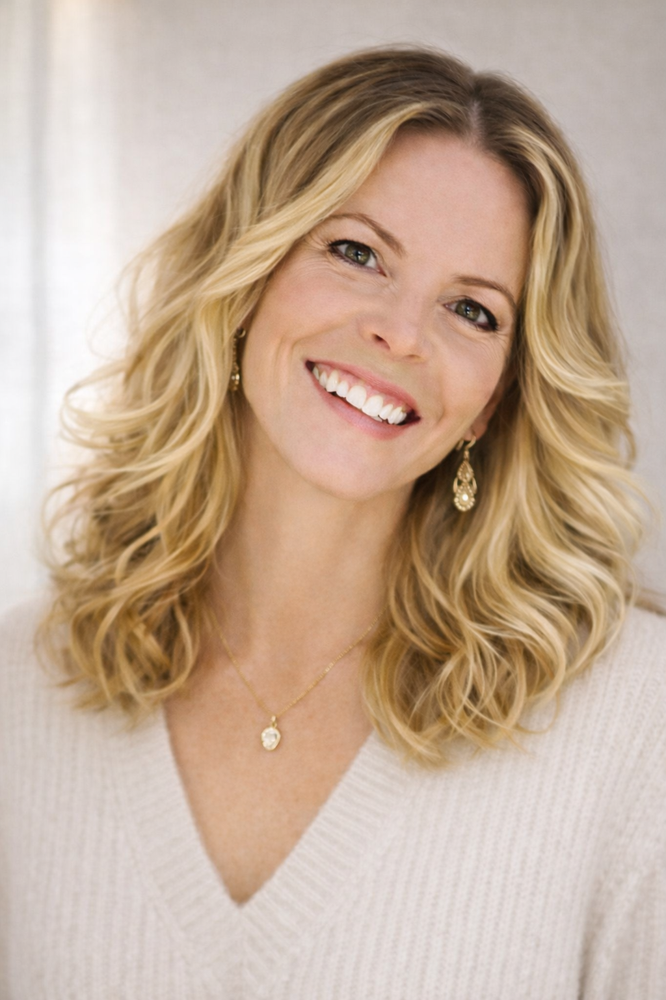

<!-- ══════════════════════════════════════════
     08-FOUNDER.HTML — Meet the Founder
     Edit: founder name, four bio paragraphs,
           credential pills, closing signature.

     To add a real photo:
       1. Replace <div class="founder-photo-placeholder">
          with 
       2. Remove the placeholder <div> and its closing tag
══════════════════════════════════════════ -->
<section id="founder">
  <div class="founder-grid">
    <!-- PHOTO COLUMN -->
    <div class="founder-img-wrap reveal-left">
      <!-- Placeholder — swap with  when photo is ready -->
      
      <!-- Offset gold-border frame -->
      <div class="founder-img-accent" aria-hidden="true"></div>

      <!-- Floating credential tag -->
      <div class="founder-img-tag">
        <p>Licensed Cosmetologist<br />&amp; Community Builder</p>
      </div>
    </div>

    <!-- TEXT COLUMN -->
    <div class="founder-text reveal-right">
      <span class="eyebrow">Meet the Founder</span>

      <!-- FOUNDER NAME -->
      <h2 class="founder-name">Hi, I'm <em>Kalee.</em></h2>

      <div class="founder-bio">
        <!-- BIO — edit these four paragraphs -->
        <p>
          For the past 18 years, I've worked as a licensed cosmetologist
          alongside initiatives in community building and education — walking
          with women and families through seasons of change, growth, and
          transition.
        </p>
        <p>
          As a coach with training in holistic care and birth support, my work
          has grown beyond personal services into creating environments that
          help individuals and families reconnect with dignity, stability, and a
          renewed sense of self.
        </p>
        <p>
          My journey has taken me across five countries — from Germany to Mexico
          — shaping my commitment to building spaces that support both personal
          well-being and meaningful connection at the family level.
        </p>
        <p>
          Now, returning to Highlands Ranch where I grew up, I'm bringing that
          lived experience into the development of Knew You — a space designed
          to support families through practical services, community connection,
          and values-centered care.
        </p>
      </div>

      <!-- CREDENTIAL PILLS — add or remove freely -->
      <div class="founder-credentials stagger">
        <span class="founder-cred">Licensed Cosmetologist</span>
        <span class="founder-cred">Holistic Care Coach</span>
        <span class="founder-cred">Community Builder</span>
        <span class="founder-cred">Birth Support</span>
      </div>

      <!-- SIGNATURE -->
      <div class="founder-sig">— Kalee</div>
    </div>
  </div>
</section>
